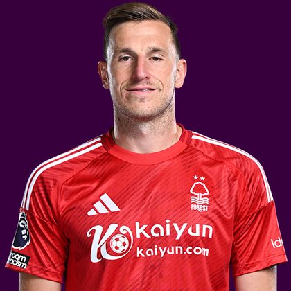

PITCHKEEP
Premier League ranks
Player File · FWD NFO · Premier #69

Chris Wood
FWD · Nott'm Forest · age 34 · £5.6m
2025/26 Premier League
| Year | Starts | Min | G | A | xG | xA | CS | GC | Bonus | YC | Sleeper | FPL |
|---|---|---|---|---|---|---|---|---|---|---|---|---|
| 2025/26 | 0 | 129 | 0 | 0 | 1.15 | 0.01 | 0 | 2 | 0 | 0 | 0 | 9 |
Plus
- Penalty order #2.
- Consensus 62.67 vs Sleeper #403 - the industry still believes more than 2025/26 counted.
Minus
- Age 34. The youth-lean boards will keep sliding him.
- Board spread 3-403 (RotoWire Draft values to Sleeper BPL 2025).
PitchKeep Take · The Premier
Chris Wood is a forward for Nott'm Forest, age 34, £5.6m. The Premier ranks him 69th overall by splitting Sleeper BPL 2025 (#403, 0.0 points) with the consensus of 3 other boards (62.67). The industry still has him 340 spots ahead of the 2025/26 Sleeper count. The Premier pays that reputation something, not everything. Brand does not outrun a down year, and a down year does not erase a player Nott'm Forest still builds around.
The 2025/26 Premier League line is 0 starts and 129 minutes, 0 goals and 0 assists, 0 tackles and 0 CBI. Official FPL scored it at 9 points (1.0 per match). Sleeper's table turned the same counting stats into 0.0. Forwards get 9 a goal and 0 for a clean sheet, so this ranking is almost entirely the 0 finishes and 0 assists - not the defensive crumbs.
Underlying: 1.15 xG, 0.01 xA, 1.16 xGI. Set pieces: penalty order #2 for Nott'm Forest. Role at Nott'm Forest is the 2026/27 question sitting under the 2025/26 number. 0 starts is a starter. Anything under 25 starts is a rotation warning we already priced. Minutes are the skill that survives a finishing regression. The friendliest board is RotoWire Draft values at 3; the coldest is Sleeper BPL 2025 at 403.
Market: £5.6m, 8 boards on the file. That is leftover money for a Premier-ranked name. If the minutes hold, this board already voted. FPL's own EP-next is 0.7. ICT 4.2.
Instruction: deep-league starter, shallow-league watchlist. The 2025/26 line got him onto the 400. A role change gets him off it. Watch minutes, not vibes. Nearby on The Premier: Alex Scott, Dango Ouattara, Marcus Tavernier. Versus The Pitch (Sleeper-only #403), the hybrid moves him up to #69. That move is the third list doing its job.
Age 34 is not a moral failing and it is not invisible. Youth-lean boards (The Athletic-style remap on this board) push him down; veteran-rating boards (WhoScored, SofaScore) keep him up. The Premier averages those instincts instead of pretending a 34-year-old forward is 24. If you need a three-year window, look younger. If you need 2026/27, he just played 129 minutes and that still counts.
How to use the file: The Pitch is the Sleeper-only 400 (he is #403 there). The Premier is the 50/50 with every other board we track. Attack, Midfield, Defence, and Keepers re-rank the same Sleeper table by position. BK Value on this page follows The Premier when you are on the hybrid calculator and The Pitch when you are on the Sleeper calculator. Same curve either way - 12,000 at 1.01.
Board graph
Spread 3-403 · 8 sources
Tape · 2025/26 Premier League
HIGHLIGHTS | CHRIS WOOD HAT-TRICK 😍 | NEWCASTLE UNITED 1-3 NOTTINGHAM FOREST | PREMIER LEAGUE
Every Board
Spread 3-403 · 8 sources
| Source | Rank |
|---|---|
| RotoWire Draft values | 3 |
| RotoWire Fantrax / Sleeper 400 | 73 |
| RotoWire FPL 400 | 112 |
| FPL Price Board | 118 |
| FPL xGI | 153 |
| FPL Ownership | 218 |
| FPL 2025/26 Points | 328 |
| Sleeper BPL 2025 | 403 |
All players · The Premier · The Pitch · PK News · Calculator